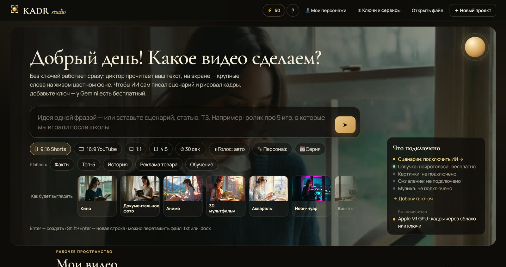

Авторам TikTok, Shorts і Reels
Регулярні вертикальні ролики без зйомок і монтажу. «Нарізати Shorts» робить із довгого фільму 3–8 кліпів: заголовок-гачок, кадрування по обличчю, текст і хештеги до кожного.
Приклад: 7 Shorts з одного фільму про сниНапишіть ідею — KADR Studio сама створить сценарій, голос, кадри, живі сцени, музику й субтитри та збере MP4 для TikTok, Shorts, Reels і YouTube.
Windows і Mac — можна завантажити вже зараз · без реклами й телеметрії
KADR Studio — програма для комп’ютера. Відкрийте сайт на Mac або ПК — чи .
Це не стокове відео: кадри з фільму «Чому сни здаються справжніми?» (17 хвилин), який KADR Studio зібрала з одного ТЗ. Російська версія — на тих самих кадрах, що й англійська.
Це справжні запити з проєктів і ролики, які з них зібрала KADR Studio. Натисніть на будь-який.
Таксист Олег розповідає смішну історію про пасажира, який забув у машині торт на день народження
➤Відео без звуку, уривок. Повністю і зі звуком — у шоурилі нижче.

Лише те, що зібрала програма: фільм про сни, Shorts із таксистом Олегом, реклама кав’ярні, ролик про океан. Увімкніть звук — голос і музика з самих роликів.
Уривки саме такі, якими вийшли з програми, — лише склеєні для сайту.2 МБ · зі звуком
Від ідеї одним реченням до готового відео: де написати ідею, як вибрати формат і голос, що робить розкадровка і де знайти готовий ролик.
Запис екрана програми · 2:01 · зі звуком4 МБ
Регулярні вертикальні ролики без зйомок і монтажу. «Нарізати Shorts» робить із довгого фільму 3–8 кліпів: заголовок-гачок, кадрування по обличчю, текст і хештеги до кожного.
Приклад: 7 Shorts з одного фільму про сни
Коротка реклама кафе, магазину чи послуги у 9:16, 1:1 або 4:5. Товар чи героя можна задати за фото — він буде однаковим у кожному кадрі. Є шаблон «Реклама товару».
Приклад: реклама кав’ярні з однієї фрази, 28 секундПояснювальні ролики й фільми до 30 хвилин із розділами: ШІ-режисер пише сценарій із гачком, обирає плани й ракурси. Тексти для публікації — назва, опис із розділами, хештеги.
Приклад: фільм про сни, 17 хвилин, з одного ТЗ EN
EN RU
RUТой самий відеоряд — іншою мовою: голос диктора цієї мови й перекладені субтитри. Озвучення — безкоштовні нейроголоси (українська, російська, англійська) або ElevenLabs за ключем, зокрема ваш клонований голос.
Приклад: фільм про сни англійською та російськоюЖодного монтажу на таймлайні. Ви описуєте, що хочете, — програма робить решту.
Одна фраза на кшталт «Пам’ятаєш Денді?» або власний текст — до 30 000 символів. Формат 9:16, 16:9, 1:1 чи 4:5, тривалість від 15 секунд до 30 хвилин. Можна взяти шаблон: Факти, Топ-5, Історія, Реклама товару, Навчання.
KADR пише сценарій (Claude, OpenAI чи Gemini за вашим ключем), озвучує, малює кадри, оживлює ключові сцени, пише музику й розставляє субтитри по словах. Хочете спершу переглянути кадри — увімкніть розкадрування.
MP4 із гучністю під соцмережі. Програма сама перевірить ролик і простими словами підкаже, що виправити; будь-який кадр перемальовується однією кнопкою.
Орієнтовний час на RTX 3060: кадр — близько хвилини, жива сцена — близько 2,5 хвилини, фільм на 20 хвилин — близько 4 годин. Без ключів і відеокарти ролик із вашого тексту збирається за хвилину-дві.

Головний екран програми: рядок для ідеї, формат, шаблон — і ➤.
12 напрямів: від кіно й документального фото до аніме та 3D-мультфільму. Той самий кадр у різних стилях:


Що вийде на вашому комп’ютері — без обіцянок понад те, що програма вміє вже сьогодні.
Кадри, живі сцени й музика генеруються на вашій відеокарті — без оплати за кожну картинку. Генератор (~28 ГБ) програма завантажить і встановить сама.
Windows 10/11, 64-біт.
Якщо пам’яті від 16 ГБ — кадри створюються на самому Mac; на інших Mac їх роблять сервіси за ключем. Живих сцен на Mac поки немає.
Голос, субтитри, монтаж і збирання — на будь-якому Mac із macOS 12 і новішою, зокрема з Intel.
Без ключів ваш текст читає безкоштовний нейроголос, на екрані — великі слова на живому тлі; ролик збирається за хвилину-дві.
З ключами сценарій пише ШІ, а кадри — сервіси за ключем або безкоштовні фото Pexels і Pixabay. KADR Cloud — наші сервери з потужними відеокартами — незабаром.
Кожен етап можна виконати безкоштовно на власному залізі або підключити свої ключі до сервісів.
Claude, OpenAI або Gemini з вашим ключем. Без ключа сценарієм стає ваш власний текст.
ElevenLabs за ключем, зокрема клоновані голоси, безкоштовні нейроголоси (UK, RU, EN) або системні голоси. Один голос на весь ролик.
RealVisXL на вашій NVIDIA, генератор встановлюється однією кнопкою. Платити за картинки не потрібно.
Ключові моменти оживають (Wan 2.2): близько 2,5 хвилини на сцену на RTX 3060.
Створюється на вашій відеокарті (ACE-Step) — без пошуку треків на стоках.
Субтитри по словах і гучність під соцмережі. MP4 одразу готовий до публікації.
3–8 вертикальних кліпів із довгого фільму, кадрування по обличчю, текст і хештеги.
Герой, стиль чи товар за описом або фото — однаковий у кожному кадрі. А ще 12 готових героїв із власним голосом.
Той самий відеоряд, голос диктора цієї мови й перекладені субтитри.
Назва, опис із розділами, хештеги й закріплений коментар — однією кнопкою.
Чат змінює сцени та стиль; перед створенням ШІ пропонує 3 різні варіанти ролика.
Вставте ключ — програма сама визначить сервіс. Ключі шифруються засобами системи.
Одна програма — для обох комп’ютерів. Після встановлення вона сама пропонує оновлення.
Який у мене Mac? Яблуко в лівому верхньому куті → «Про цей Mac»: «Чип Apple M…» — перша кнопка, «Процесор Intel» — друга.
Спробуйте безкоштовно, а купуйте, коли ролики сподобаються. Усе працює на вашому комп’ютері.
Пакети Енергії від $10 — для Mac і ПК без відеокарти: кадри, живі сцени й музика рахуються в хмарі KADR. Ціну ролика програма покаже до старту; ⚡ не згорають.
Встановлю програму й генератор, підключу ключі та зробимо перший ролик разом — віддалено.
Із власною відеокартою кадри нічого не коштують поштучно; ключі до ШІ-сервісів (за бажанням) оплачуються в самих сервісах.
Купити: напишіть на kadrstudia8@gmail.com — надішлемо реквізити й активуємо програму. Оплата карткою на сайті — незабаром.
Пошта: kadrstudia8@gmail.com. Відповімо особисто, без розсилок і трекерів.
Ні. Рядок для ідеї, формат, тривалість — і ➤. Є шаблони (Факти, Топ-5, Історія, Реклама товару, Навчання), 12 стилів картинки та 12 готових персонажів. Ключ просто вставляється — програма сама зрозуміє, від якого він сервісу. Генератор кадрів встановлюється всередині програми однією кнопкою.
Для безкоштовних кадрів, музики й живих сцен — так, NVIDIA з 8–12 ГБ відеопам’яті (на Mac з Apple M і пам’яттю від 16 ГБ кадри малює сам Mac). Без неї кадри малюють сервіси за ключем або беруться безкоштовні фото з Pexels і Pixabay, а зовсім без ключів ваш текст читає безкоштовний голос на живому кольоровому тлі. Хмара KADR для комп’ютерів без відеокарти — незабаром.
Подивіться шоурил вище — це те, що виходить із програми. Перед збиранням можна увімкнути розкадрування й перемалювати будь-який кадр. Після збирання «Перевірка ролика» знаходить недоліки й називає їх простими словами, а грубий брак один раз перемальовує сама. Живі сцени з ключем Gemini перевіряє ШІ: брак перезнімається, а після двох невдач сцена залишається гарною картинкою.
Залежить від відеокарти. На RTX 3060: кадр — близько хвилини, жива сцена — близько 2,5 хвилини, фільм на 20 хвилин — близько 4 годин. Без ключів і відеокарти ролик із вашого тексту збирається за хвилину-дві.
Пробний режим — безкоштовно: 3 ролики до 60 секунд. Ліцензія назавжди — $59 для перших 100 покупців (≈ 2 400 грн), потім $99 (≈ 4 000 грн): усе на своєму ПК, оновлення 1 рік. Замість ліцензії — підписка $9 на місяць або $79 на рік. «Налаштую під ключ» — $99–149. Хмара (пакети ⚡ від $10) — незабаром. Купити: напишіть на kadrstudia8@gmail.com; оплата карткою — незабаром. Із власною відеокартою кадри нічого не коштують поштучно, а ключі до ШІ-сервісів (за бажанням) оплачуються в самих сервісах.
Завантажте KADR Studio для свого комп’ютера й зареєструйтеся в ній за поштою. Без оплати працює пробний режим (3 ролики). Купіть ліцензію або підписку — напишіть на kadrstudia8@gmail.com із пошти акаунта, і ми його активуємо: знак і обмеження зникнуть. Зазвичай це займає кілька хвилин у робочий час. Поповнення ⚡ — лише баланс для хмари, програму воно не відкриває. Контакти — на сторінці «Підтримка».
⚡ — внутрішня одиниця KADR для хмари: без потужної відеокарти кадри, живі сцени й музика рахуються в хмарі KADR на наших серверах, а ⚡ списуються в міру готовності кадрів, ціну видно до старту. ⚡ — не гроші й не криптовалюта, їх не можна передати іншій людині. З власною відеокартою NVIDIA (або Mac на чипі Apple від 16 ГБ) кадри малюються безкоштовно, ⚡ не потрібні. Хмара та ціни ⚡ — незабаром.
Так: macOS 12 і новіша, Mac із чипом Apple M1–M4 або Intel. На Mac із чипом Apple і пам’яттю від 16 ГБ кадри малює сам комп’ютер; на інших — сервіси за ключем, а незабаром і хмара KADR. Живі сцени на Mac поки не створюються. Голос, субтитри, монтаж і збирання відео працюють на будь-якому Mac. Під час першого запуску macOS один раз попросить дозвіл — «Системні параметри» → «Конфіденційність і безпека» → «Усе одно відкрити».
Ні. Без ключів сценарієм стає ваш власний текст, а озвучують його безкоштовні нейроголоси (українська, російська, англійська) або системні голоси. Ключі Claude, OpenAI чи Gemini (у Gemini ключ безкоштовний) потрібні, щоб ШІ писав сценарій за вас; ключ ElevenLabs — для голосів ElevenLabs, зокрема ваших клонованих.
Ролики, сценарії та проєкти зберігаються на вашому комп’ютері. Акаунт потрібен лише для активації програми й балансу ⚡, телеметрії немає. Ключі зберігаються в зашифрованому вигляді: на Windows — засобами системи (DPAPI), на Mac — у Зв’язці ключів. Якщо ви підключаєте зовнішні сервіси (Claude, OpenAI, Gemini, ElevenLabs), текст запитів надсилається безпосередньо в ці сервіси за вашим ключем. Докладніше — Політика конфіденційності.
9:16 для Shorts, TikTok і Reels, 16:9 для YouTube, а також 1:1 і 4:5. Тривалість — від 15 секунд до 30 хвилин.
Умови повернення — на сторінці «Політика повернення».
Завантажте KADR Studio, напишіть, про що ролик, і подивіться, що вийде. Залишилися запитання — напишіть, відповімо особисто.